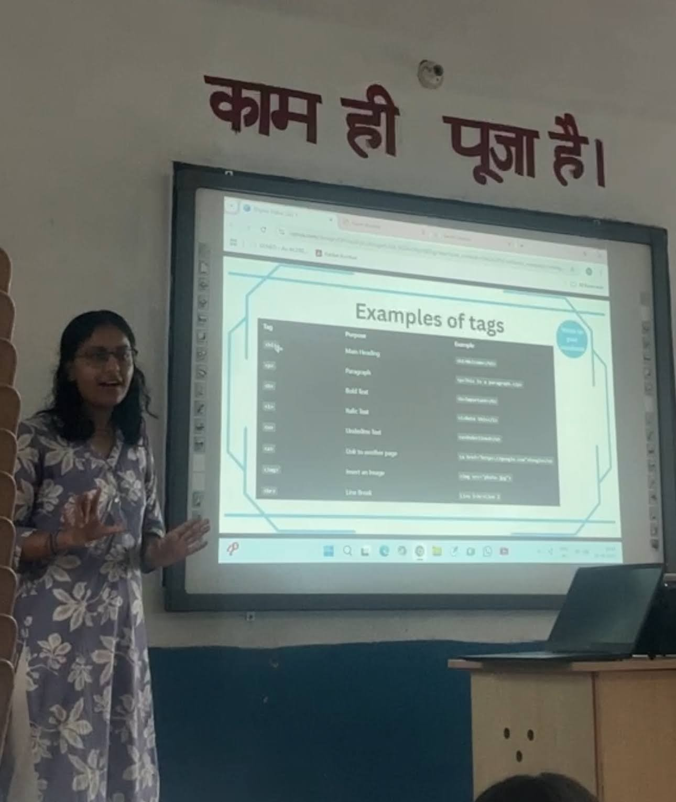
Cohort 1 Gallery
From Kotli, with curiosity.
A visual record of Digital Disha's first cohort at Government High School, Kotli. These moments capture students learning, practicing, experimenting, and beginning their journey into the digital world.
24
students directly impacted
10
days of digital learning
9th & 10th
classes
50+
families indirectly reached
Official cohort film
Watch the Digital Disha launch video and first cohort aftermovie.
This video captures the heart of Digital Disha’s first cohort: the classroom, the students, the curriculum, and the small moments that made the program real.
Watch on YouTube
Classroom moments
The first sparks of Digital Disha.
A visual archive from the first Digital Disha cohort at Government High School, Kotli... from classroom setup and teaching moments to student practice and group memories.
Tiny note: some photos were taken on the front camera of my old Android, so the quality is imperfect, but the memories are very real :)
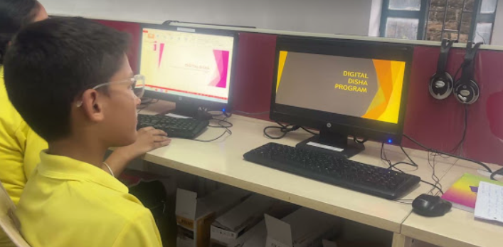
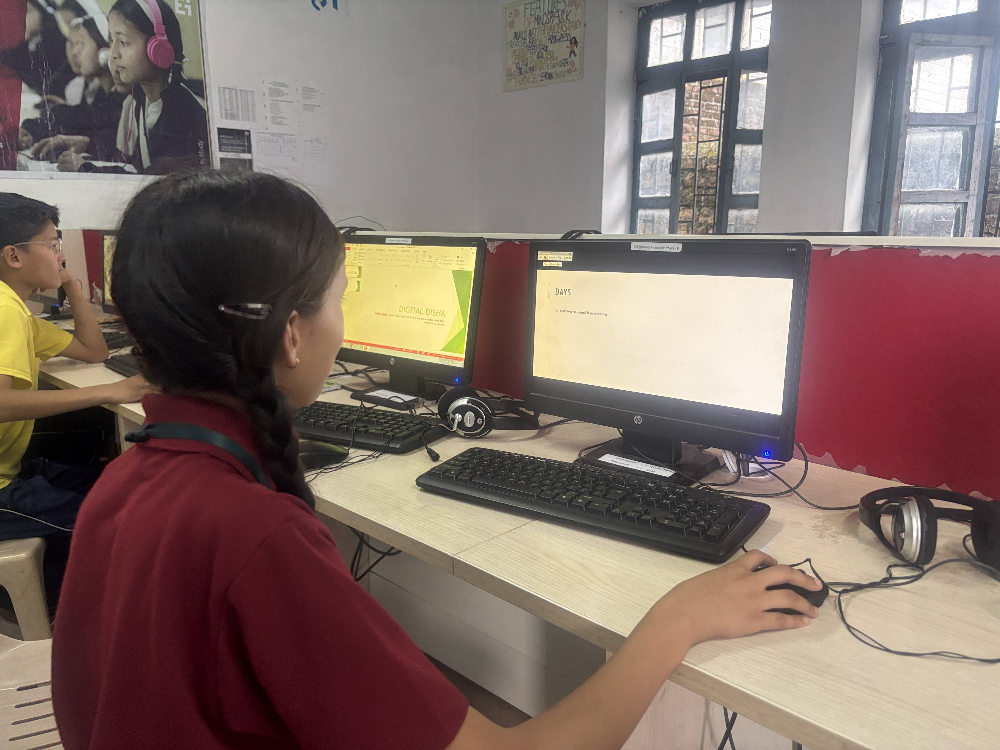
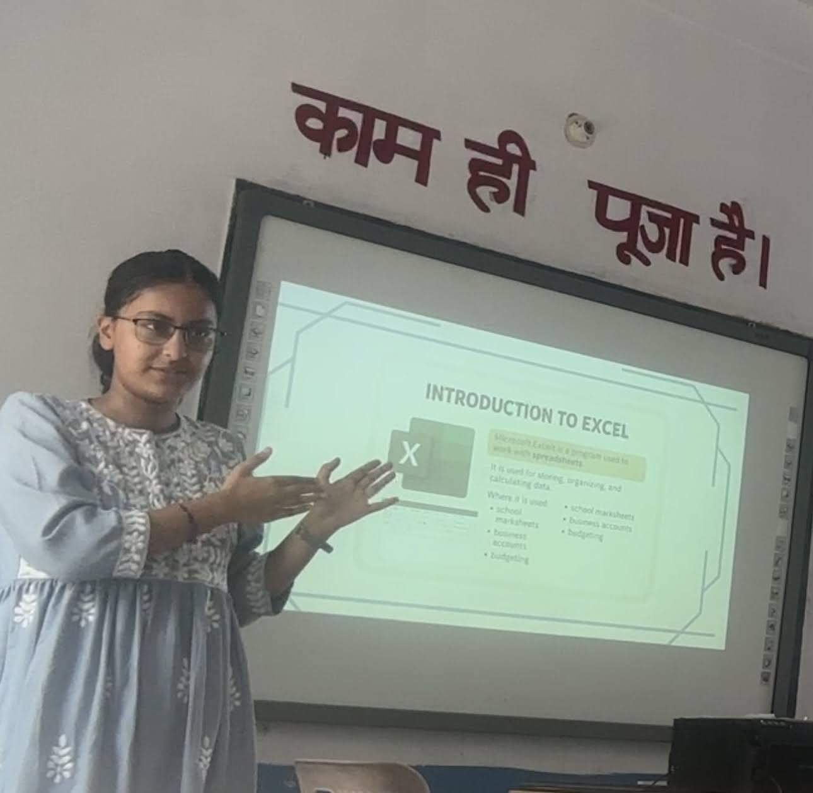
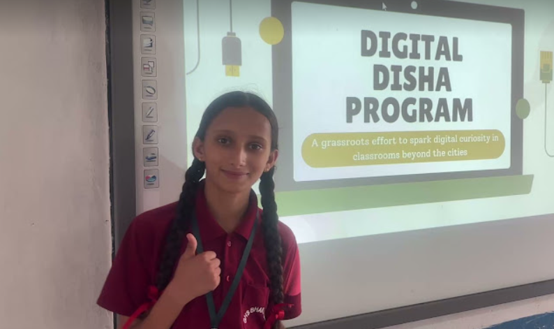
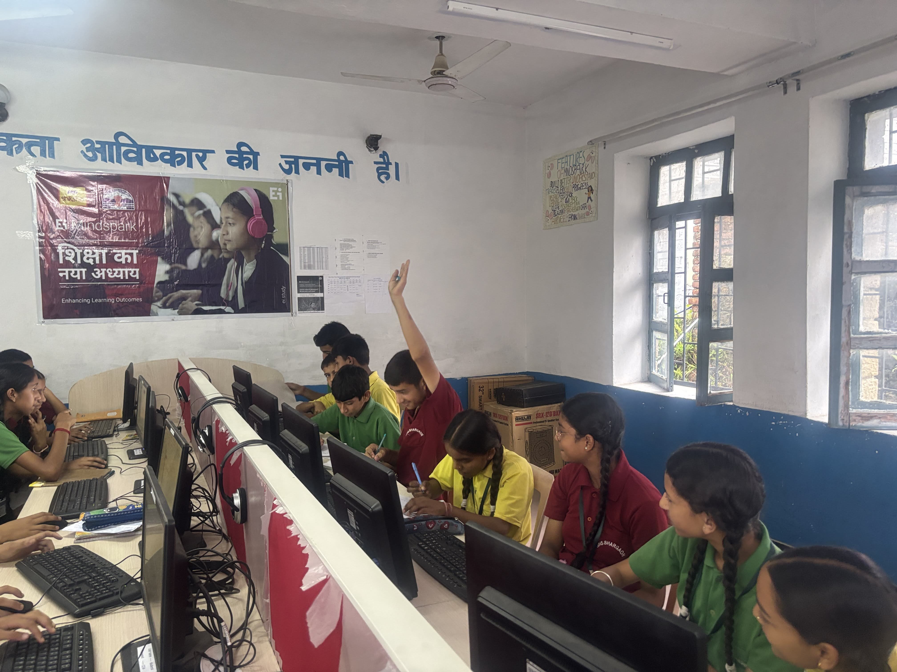

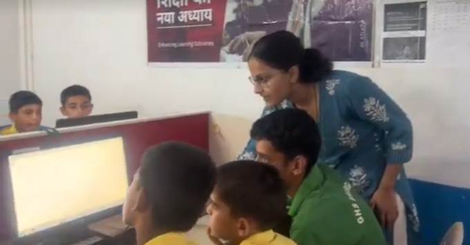
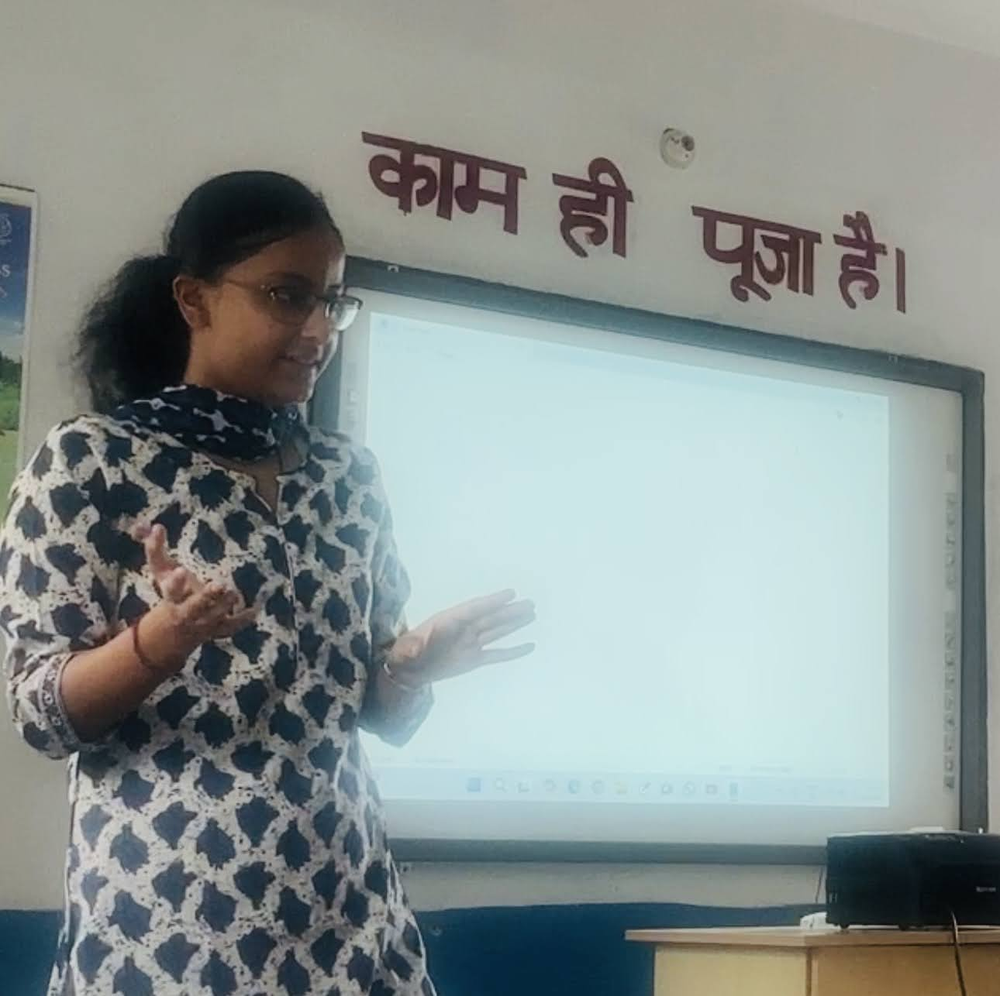
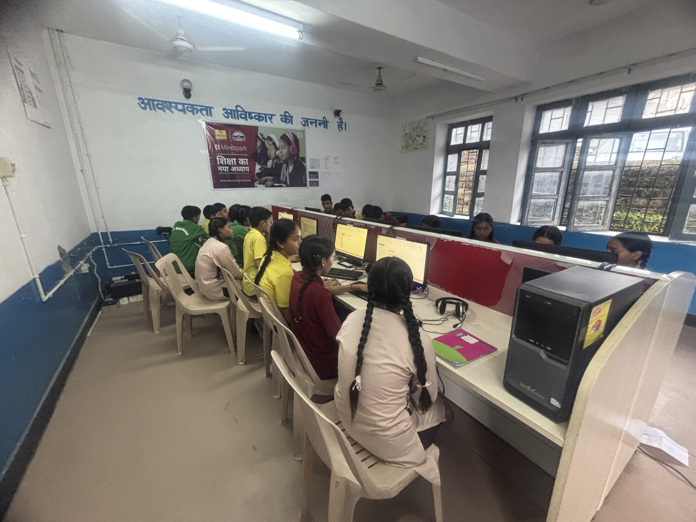
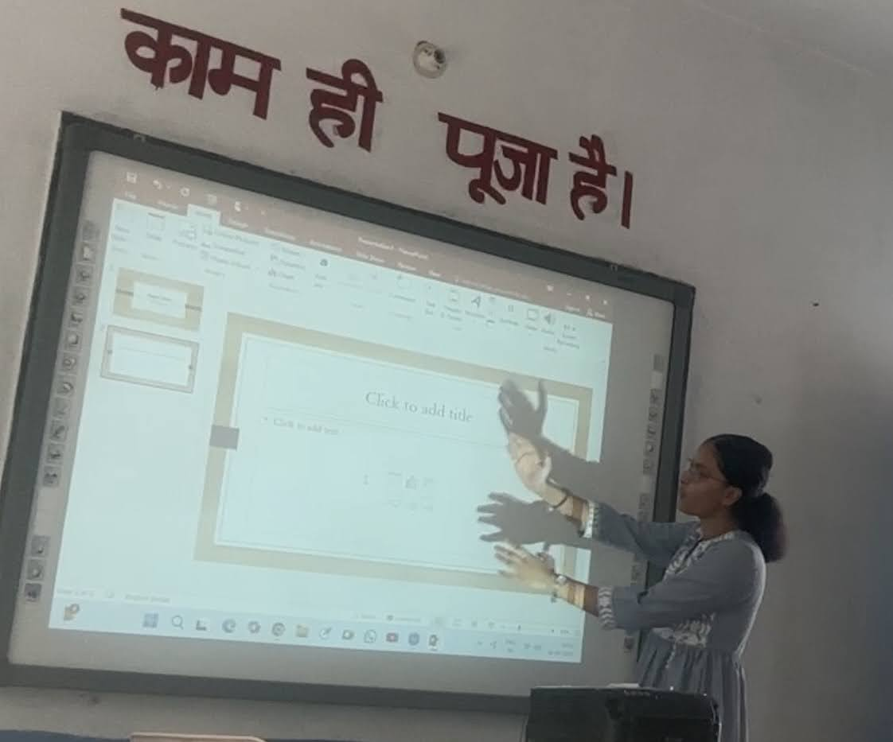
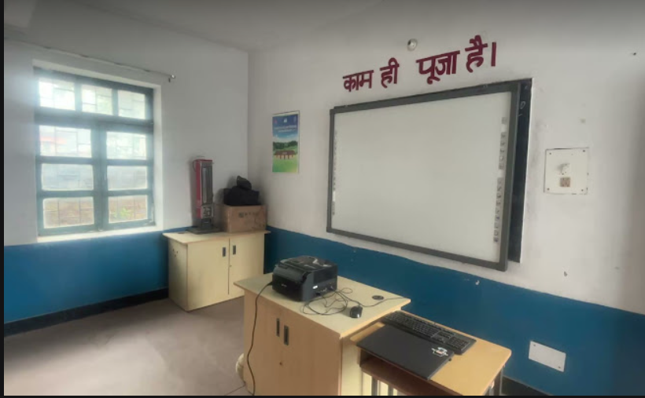
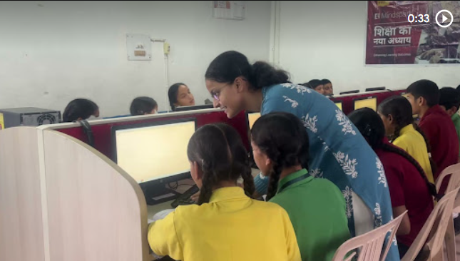